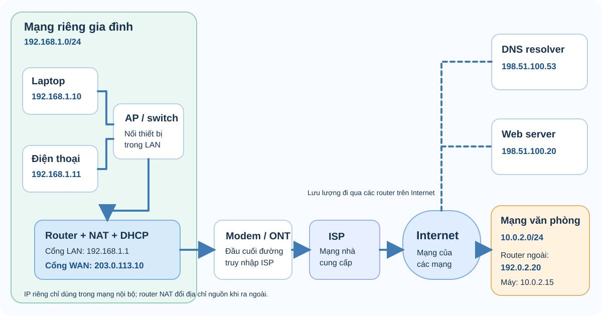

Buổi 01 / 25
Tổng quan mạng máy tính
Mạng máy tính là cách nhiều thiết bị trao đổi dữ liệu qua các liên kết theo những quy tắc chung. Sau bài này, bạn có thể gọi đúng tên thành phần, giải thích đường đi của một thông điệp và đọc các chỉ số hiệu năng cơ bản.
1. Ai đang nói chuyện với ai?
Host là thiết bị đầu cuối có thể gửi hoặc nhận dữ liệu: laptop, điện thoại, camera, máy chủ. Node rộng hơn: bất kỳ điểm nào tham gia mạng, kể cả switch và router. Link là đường nối giữa hai node, có thể là cáp đồng, cáp quang hoặc sóng radio.
Trong mô hình client–server, client chủ động yêu cầu, server cung cấp dịch vụ. Trình duyệt xin trang web từ máy chủ là ví dụ. Trong P2P, các máy ngang hàng vừa cung cấp vừa tiêu thụ tài nguyên. Một ứng dụng vẫn có thể dùng cả hai: server để tìm bạn, P2P để truyền dữ liệu trực tiếp.
Quan sát luồng: yêu cầu đi từ client đến server; phản hồi đi ngược lại.
Đổi vai trò theo từng giao dịch: cùng một laptop có thể là client của web và server chia sẻ tệp.
2. Phạm vi mạng và thiết bị
| Loại | Phạm vi / ví dụ | Điểm cần nhớ |
|---|---|---|
| PAN | Vài mét, điện thoại–tai nghe Bluetooth | Mạng cá nhân |
| LAN | Nhà, phòng lab, văn phòng | Thường do một tổ chức quản lý |
| MAN | Đô thị | Kết nối nhiều mạng trong thành phố |
| WAN | Liên tỉnh/quốc gia | Đường dài, thường dùng hạ tầng nhà mạng |
| Internet | Toàn cầu | Mạng của các mạng dùng IP |
| Intranet | Nội bộ tổ chức | Phân theo quyền truy cập, không theo khoảng cách |
Hub lặp tín hiệu ra mọi cổng; switch chuyển frame theo MAC trong LAN; router nối các mạng IP và chọn hop kế tiếp. Modem/ONT giao tiếp với đường truy nhập của nhà mạng; AP cho thiết bị Wi-Fi gia nhập LAN; firewall kiểm soát lưu lượng theo chính sách; load balancer phân phối yêu cầu đến nhiều server.
Thiết bị gia đình thường gộp router, switch, AP, NAT và firewall trong một hộp. Chức năng mới là điều quan trọng, không phải vỏ hộp.
Thiết bị mạng làm nhiệm vụ gì?
Một thiết bị vật lý có thể đảm nhiệm nhiều vai trò. Hãy nhìn chức năng trên đường đi của gói tin trước khi gọi tên chiếc hộp.
| Thiết bị | Vai trò, nhiệm vụ | Ví dụ vị trí |
|---|---|---|
| NIC / card mạng | Giao diện Ethernet hoặc Wi-Fi của host; gửi và nhận dữ liệu trên đường liên kết. | Trong laptop, máy chủ, vi điều khiển |
| Hub | Lặp tín hiệu ra các cổng khác, không học địa chỉ đích; chủ yếu gặp khi học mạng đời cũ. | Thiết bị Ethernet cũ |
| Switch | Học địa chỉ MAC và chuyển frame đến cổng phù hợp trong LAN; có thể tách LAN bằng VLAN. | Tủ mạng văn phòng |
| Access point (AP) | Cho thiết bị Wi-Fi kết nối vào mạng cục bộ, thường bắc cầu Wi-Fi với Ethernet. | Điểm phát Wi-Fi trong nhà |
| Router / default gateway | Nối các mạng IP khác nhau, tra bảng định tuyến và chọn chặng tiếp theo. Host gửi lưu lượng ngoài mạng con tới gateway. | Giữa LAN gia đình và mạng ISP |
| Modem / ONT | Đầu cuối đường truy nhập của nhà cung cấp: modem làm việc với tín hiệu của công nghệ đường dây; ONT kết thúc đường quang thụ động. Chúng không mặc nhiên làm NAT hay phát Wi-Fi. | Giữa router nhà và đường cáp của ISP |
| Firewall | Cho phép hoặc chặn lưu lượng theo quy tắc và thường theo dõi trạng thái kết nối. | Router gia đình, ranh giới công ty |
| Load balancer | Phân phối yêu cầu tới nhiều máy chủ để chia tải và tăng khả dụng. | Trước cụm web server |
| Server | Máy hoặc chương trình cung cấp dịch vụ như web, DNS, DHCP, tệp; “server” là vai trò, không chỉ là một kiểu phần cứng. | Trong LAN hoặc trên Internet |
Hộp “modem Wi-Fi” gia đình thường tích hợp modem/ONT, router, switch, AP, firewall, NAT, DHCP và DNS forwarder. Nếu dùng ONT ở chế độ bridge, một router riêng có thể đảm nhiệm phần định tuyến và NAT.
Các vai trò dịch vụ: DNS, DHCP và NAT
| Vai trò | Làm gì? | Trong ví dụ bên dưới |
|---|---|---|
| DNS resolver | Trả lời truy vấn tên miền bằng địa chỉ IP; client có thể hỏi DNS forwarder trong router hoặc một resolver ở ngoài Internet. | 198.51.100.53 trả IP web server |
| DHCP server | Tự động cấp IP, subnet mask, default gateway và địa chỉ DNS cho thiết bị trong LAN. | Router cấp 192.168.1.10 cho laptop |
| NAT/PAT | Chức năng dịch IP và thường cả port ở router/firewall, để nhiều host dùng chung một IPv4 phía ngoài. NAT duy trì bảng ánh xạ cho gói phản hồi. | 192.168.1.10:51514 → 203.0.113.10:62001 |
| Web server | Nhận yêu cầu HTTP/HTTPS và trả nội dung hoặc dữ liệu ứng dụng. | 198.51.100.20:443 |
“NAT server” là cách gọi dễ gây nhầm: NAT thường là chức năng trên router hoặc firewall, không cần một máy chủ riêng. DNS server có thể là máy/dịch vụ riêng, còn DNS forwarder trên router chỉ chuyển tiếp hoặc lưu tạm câu trả lời.
Sơ đồ: từ mạng riêng ra Internet
Đọc từ trái sang phải để thấy ranh giới giữa LAN, đường truy nhập ISP và các đích ở Internet. Hai vùng xanh lá và vàng là hai mạng riêng khác nhau; địa chỉ của chúng không được định tuyến trực tiếp trên Internet công cộng.

192.0.2.0/24, 198.51.100.0/24 và 203.0.113.0/24 trong hình là địa chỉ dành cho tài liệu minh họa, không phải máy chủ thật.- Vào LAN: laptop
192.168.1.10kết nối qua AP hoặc switch. DHCP đã cấp IP, gateway192.168.1.1và địa chỉ DNS. - Tìm IP đích: laptop hỏi DNS để lấy địa chỉ của website. DNS là một trao đổi riêng, xảy ra trước yêu cầu web nếu chưa có kết quả trong cache.
- Ra Internet: vì
198.51.100.20nằm ngoài192.168.1.0/24, laptop gửi gói tới router. NAT/PAT đổi IP:port nguồn sang203.0.113.10:62001; ONT/modem đưa tín hiệu lên đường truy nhập ISP. - Đến server và trở về: các router trên Internet chuyển gói đến web server. Phản hồi về IP:port công cộng được router nhà ánh xạ lại cho laptop. Mạng văn phòng
10.0.2.0/24cũng cần router/gateway để giao tiếp với bên ngoài.
Các dải IPv4 riêng thường gặp là 10.0.0.0/8, 172.16.0.0/12 và 192.168.0.0/16. Sơ đồ giả định router nhà có IPv4 công cộng; nếu ISP dùng CGNAT thì còn một lớp NAT ở mạng ISP.
3. Đường truyền và kiểu gửi
Cáp xoắn đôi rẻ, dễ lắp; hai dây xoắn giúp giảm nhiễu. Cáp quang truyền ánh sáng, dùng cho khoảng cách xa và tốc độ cao, không bị nhiễu điện từ. Vô tuyến giúp di động nhưng phải chia sẻ phổ sóng, dễ bị vật cản và nhiễu.
| Kiểu | Đích nhận | Ví dụ |
|---|---|---|
| Unicast | Một đích cụ thể | Trình duyệt gọi một server |
| Broadcast | Mọi host trong miền quảng bá | ARP request trên Ethernet |
| Multicast | Nhóm host đăng ký | Luồng video nội bộ |
| Anycast | Một trong nhiều node cùng địa chỉ, thường là node gần theo định tuyến | DNS/CDN phân tán |
Broadcast của Ethernet không đi xuyên router theo cách thông thường; multicast và anycast cũng không đồng nghĩa với broadcast.
4. Chuyển mạch kênh và chuyển mạch gói
Chuyển mạch kênh: đặt trước một kênh xuyên suốt cuộc gọi; tài nguyên được giữ ngay cả khi hai bên im lặng. Chuyển mạch gói: chia dữ liệu thành gói, mỗi gói dùng chung đường truyền với gói khác; hiệu quả khi lưu lượng ngắt quãng, nhưng hàng đợi có thể gây trễ hoặc mất gói.
Ví dụ: gửi ảnh 2 MB qua Internet không “giữ” nguyên một dây cho bạn. Các gói của ảnh xen kẽ gói của người khác tại router; bên nhận ghép lại ở các tầng thích hợp.
5. Đo mạng như thế nào?
| Chỉ số | Ý nghĩa | Ví dụ |
|---|---|---|
| Bandwidth | Khả năng mang dữ liệu danh nghĩa của link | Link 100 Mb/s |
| Throughput | Lượng dữ liệu hữu ích thực tế mỗi giây | Tải tệp đạt 72 Mb/s |
| Latency | Thời gian truyền một chiều | 20 ms đến server |
| RTT | Thời gian đi và về | ping báo 40 ms |
| Jitter | Độ dao động của trễ | Gọi thoại lúc mượt lúc giật |
| Packet loss | Tỷ lệ gói không tới đích | Mất 2 trên 100 gói = 2% |
Bandwidth cao không bảo đảm latency thấp. Tắc nghẽn làm hàng đợi dài có thể khiến một link rất nhanh vẫn phản hồi chậm.
6. Đóng gói dữ liệu: thư nằm trong phong bì
Ứng dụng tạo payload. Mỗi tầng thêm header chứa thông tin để xử lý; một số tầng còn thêm trailer để kiểm tra lỗi. Đơn vị dữ liệu tại mỗi tầng gọi là PDU: data → segment/datagram → packet → frame → bit. Máy nhận bóc các lớp theo chiều ngược lại.
Header Ethernet đổi khi qua router; IP nguồn/đích thường giữ nguyên trên đường đi nếu không có NAT.
7. Tự kiểm tra
Bài làm mẫu: Link 100 Mb/s truyền tệp 25 MB. Bỏ qua overhead, trễ và đổi 1 MB = 10⁶ byte. Thời gian tối thiểu?
Xem lời giải
25 MB × 8 = 200 Mb. Thời gian = 200 Mb ÷ 100 Mb/s = 2 giây. Trong thực tế sẽ lâu hơn vì header, chia sẻ link, điều khiển truyền và độ trễ.
tcp || udp. Thử ping để quan sát RTT; đừng suy từ một lần ping ra bandwidth.8. Theo dõi một gói từ nhà tới web
Khi bạn gõ tên website, laptop có thể hỏi DNS để biết địa chỉ IP. Nếu server ở ngoài LAN, laptop gửi frame tới router nhà: MAC đích là MAC router, nhưng IP đích vẫn là server. Router bỏ frame cũ, chọn đường tiếp theo và tạo frame mới. Server trả lời theo chiều ngược lại. Đây là lý do cần phân biệt địa chỉ link (MAC) với địa chỉ mạng (IP): cùng một IP packet có thể được bọc bởi nhiều frame khác nhau trên đường đi.
Đường truyền cũng không chỉ có một tốc độ. Nếu laptop nối Wi-Fi 300 Mb/s nhưng đường Internet nhà là 50 Mb/s, tốc độ tải từ server khó vượt 50 Mb/s, còn có thể thấp hơn vì server, tắc nghẽn và overhead. Ngược lại, gửi tệp giữa hai máy cùng LAN có thể không đi qua đường Internet 50 Mb/s. Hãy hỏi “điểm nghẽn nằm ở link nào?” trước khi kết luận mạng chậm.
Đọc một phép đo: ping 10 lần có RTT 18–22 ms rồi một lần 120 ms. Độ trễ trung bình chưa kể hết trải nghiệm; lần 120 ms làm jitter tăng, ảnh hưởng cuộc gọi thời gian thực. Nếu tải tệp đạt 8 MB/s, quy đổi là 64 Mb/s vì 1 byte = 8 bit. Đừng so trực tiếp MB/s của ứng dụng với Mb/s trên gói cước.
Xem bản tin đi từ A đến B
Mở mô phỏng để thấy định dạng bản tin ở từng tầng và so sánh hành trình khi hai máy cùng mạng hoặc khác mạng.
Mở lab trực quan →